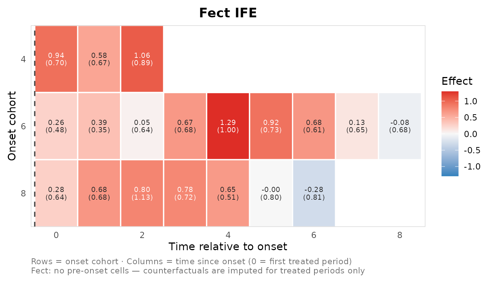
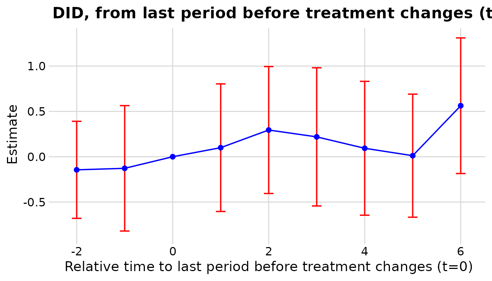
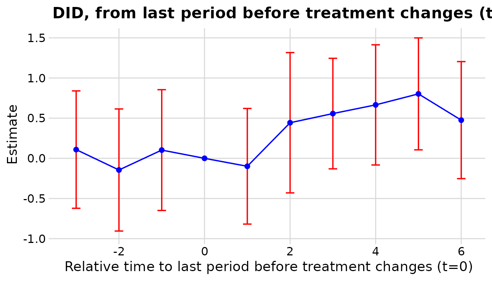
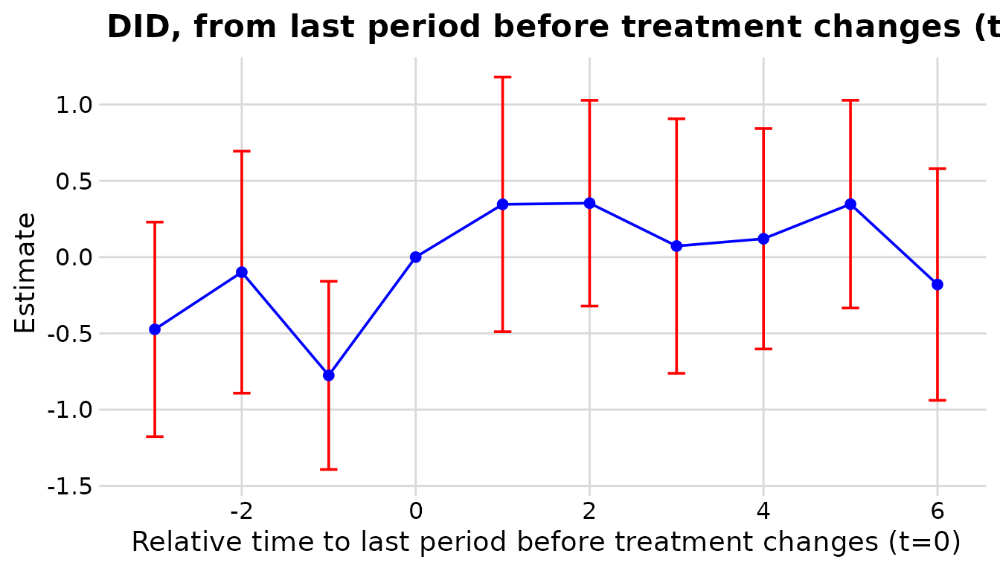
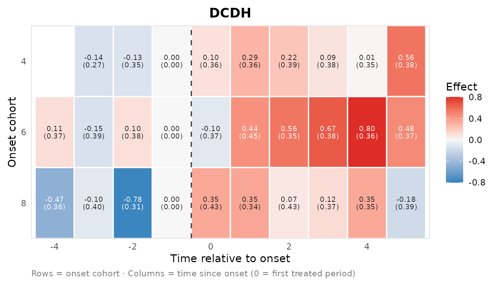
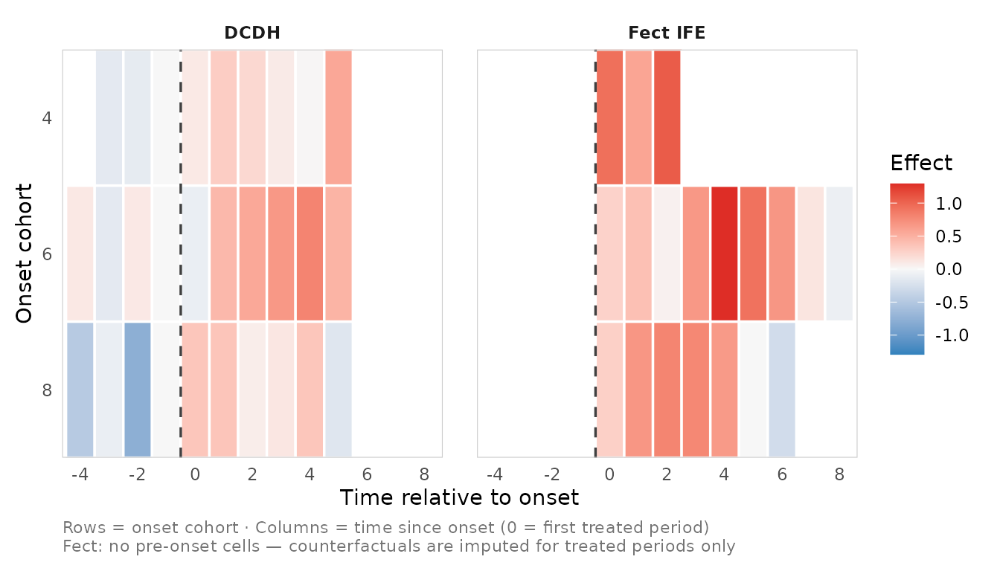
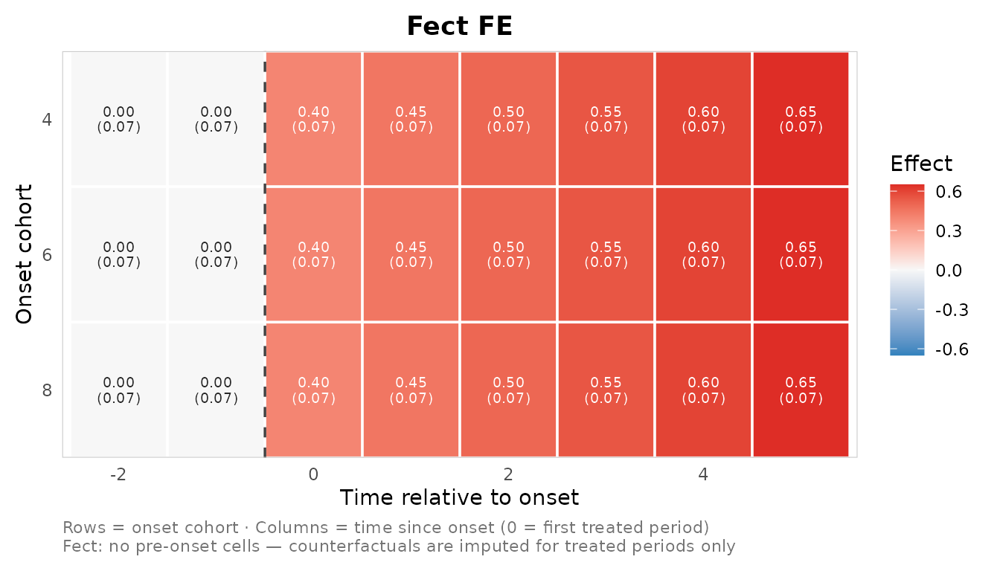
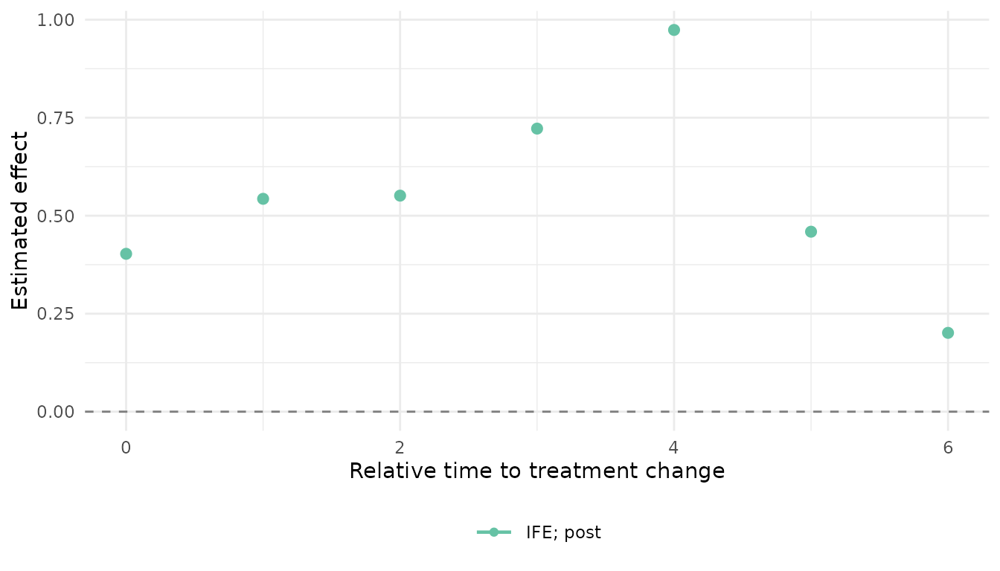

This is a separate feature line from the event-study workflow in Getting started. It supports DCDH and the fect family only; see Why not PanelMatch? below.
Event study vs. effect matrix
The main nonabsdid workflow ([nabs_event_study()] /
[nabs_event_plot()]) collapses every treated cohort onto a single
relative-time axis: one curve per estimator. That is the right summary
most of the time, but it hides which cohorts drive the
average.
The effect matrix keeps the onset cohort as a second dimension. Instead of a curve you get a grid – rows are onset cohorts, columns are relative (or calendar) time, and the fill is the estimated effect – drawn as a heatmap. It is the two-dimensional companion to the event-study overlay, built from the same estimator objects.
Three user-facing pieces mirror the event-study API:
-
nabs_effect_cells()– fit one estimator and return its cohort cells. -
as_nabs_effect_cells()– coerce an existing estimator object into the cell schema. -
plot_effect_matrix()– draw one or more cell tables as heatmaps.
A toy non-absorbing panel
set.seed(1)
N <- 120; TT <- 14
panel <- expand.grid(id = 1:N, t = 1:TT)
grp <- panel$id %% 4 # group 0 = never treated
onset <- c(`1` = 4L, `2` = 6L, `3` = 8L)[as.character(grp)]
# a quarter of switchers turn OFF again 3 periods later (non-absorbing)
off <- (panel$id %% 8 == 1) & !is.na(onset) & panel$t >= onset + 3L
panel$d <- as.integer(!is.na(onset) & panel$t >= onset & !off)
panel$y <- rnorm(N, sd = .5)[panel$id] + 0.15 * panel$t +
ifelse(panel$d == 1, 0.4, 0) + rnorm(nrow(panel))One-step fit: nabs_effect_cells()
nabs_effect_cells() wires up what a cohort breakdown
needs for each estimator (a unit-level onset cohort for DCDH;
keep.sims = TRUE for fect bootstrap cell SEs), so you only
pass the usual arguments.
res_ife <- nabs_effect_cells(
panel, outcome = "y", treatment = "d", unit = "id", time = "t",
method = "IFE", lags = 4, leads = 6, nboots = 100
)
#> For identification purposes, units whose number of untreated periods <5 are dropped automatically.
#> Cross-validating ...
#> Criterion: Mean Squared Prediction Error
#> Interactive fixed effects model...
#> r = 2; sigma2 = 0.89113; IC = 2.40771; PC = 2.98096; MSPE = 2.70052
#>
#> r* = 2
res_ife$cells
#> # <nabs_effect_cell_tbl>: 19 cells, 3 cohorts, methods: "IFE"
#> # A tibble: 19 × 12
#> cohort event_time calendar_time estimate std.error conf.low conf.high n
#> <int> <int> <int> <dbl> <dbl> <dbl> <dbl> <int>
#> 1 4 0 4 0.938 0.700 -0.848 0.903 15
#> 2 4 1 5 0.580 0.672 -1.91 1.30 15
#> 3 4 2 6 1.06 0.889 -1.34 1.45 15
#> 4 6 0 6 0.260 0.477 -0.801 1.07 30
#> 5 6 1 7 0.388 0.346 -0.771 0.757 30
#> 6 6 2 8 0.0478 0.643 -0.939 1.96 30
#> 7 6 3 9 0.667 0.679 -0.736 2.20 30
#> 8 6 4 10 1.29 1.00 -1.31 2.48 30
#> 9 6 5 11 0.921 0.735 -1.10 1.92 30
#> 10 6 6 12 0.682 0.611 -0.769 1.95 30
#> 11 6 7 13 0.130 0.648 -1.45 0.906 30
#> 12 6 8 14 -0.0850 0.684 -1.08 1.69 30
#> 13 8 0 8 0.278 0.637 -1.17 1.31 30
#> 14 8 1 9 0.680 0.677 -1.10 1.48 30
#> 15 8 2 10 0.800 1.13 -2.69 2.43 30
#> 16 8 3 11 0.778 0.716 -1.15 1.55 30
#> 17 8 4 12 0.655 0.513 -0.431 1.74 30
#> 18 8 5 13 -0.00298 0.800 -1.04 1.17 30
#> 19 8 6 14 -0.280 0.809 -0.901 1.85 30
#> # ℹ 4 more variables: window <chr>, method <chr>, outcome <chr>,
#> # se_method <chr>
plot_effect_matrix(res_ife$cells, show_estimates = TRUE, show_se = TRUE)
A single-method call is titled with the method automatically, and
show_se = TRUE prints the standard error (in parentheses)
beneath each estimate. The fect surface only covers
treated cells, so the matrix starts at
event_time = 0 (the first treated period) and has no
pre-period column.
For DCDH, dcdh_strategy = "loop" (the default)
re-estimates the event study once per onset cohort against the
never-treated units; "by" instead issues a single
did_multiplegt_dyn(..., by = cohort) call.
res_dcdh <- nabs_effect_cells(
panel, outcome = "y", treatment = "d", unit = "id", time = "t",
method = "DCDH", lags = 3, leads = 5, dcdh_strategy = "loop"
)
#> ℹ Attached polars for the DCDH backend.
#> The number of placebos which can be estimated is at most 2.The command will therefore try to estimate 2 placebo(s).


plot_effect_matrix(res_dcdh$cells, show_estimates = TRUE, show_se = TRUE)
Unlike fect, DCDH reports placebo (pre-period) cells and a reference
period (normalized to 0 at event_time = -1),
so its matrix spans negative event time too.
Comparing methods
The recommended view is one heatmap per method (above): each is titled with its method and stays readable. If you do want them in one figure, passing several cell tables facets them with a shared fill scale and legend:
plot_effect_matrix(res_dcdh$cells, res_ife$cells)
The faceted view is convenient but gets crowded fast (especially with in-tile labels), which is why per-method plots are the default emphasis.
Either way, read this as triangulation of the
pattern, not as cell-by-cell equality. The two
estimators line up on the same axes – both define the cohort as the
onset period and anchor event_time = 0 at the first treated
period – but they do not target identical quantities:
- Different estimands / identification. fect imputes a counterfactual () from a fixed-effects / factor model; DCDH forms long differences from the period before each switch. Level offsets between the two are expected.
-
Different controls. The DCDH
"loop"strategy compares each cohort to the never-treated; fect’s counterfactual is model-based over all controls. - Different coverage. fect is post-only; DCDH adds placebos and a reference cell.
-
Non-absorbing wrinkle. The cohort is the first
onset. Units that switch off and on again contribute to
large-
event_timecells under both methods, but each handles carryover differently, so those cells are the least comparable.
The fill encodes the point estimate only. Standard errors live in the
std.error column and can be drawn in each tile with
show_se = TRUE ("bootstrap" for fect,
"native" or CI-recovered "ci" for DCDH; see
the schema below). For claims about whether two cells differ, look at
those SEs rather than the colours.
Working from existing objects
If you already fit an estimator, coerce it with
as_nabs_effect_cells(). For fect you need
imputed_outcomes() (fect >= 2.4.0); for bootstrap cell
SEs the fit must have been run with
se = TRUE, keep.sims = TRUE. For DCDH, pass an object run
with a unit-level cohort by variable.
fit <- fect::fect(y ~ d, data = panel, index = c("id", "t"),
method = "fe", force = "two-way",
se = TRUE, nboots = 100, keep.sims = TRUE)
cells <- as_nabs_effect_cells(fit, method = "FE", outcome = "y")A data-frame escape hatch needs no estimator packages – handy for testing the plot or building cells from numbers you already have:
raw <- expand.grid(cohort = c(4L, 6L, 8L), event_time = -2:5)
raw$estimate <- with(raw, ifelse(event_time < 0, 0, 0.4 + 0.05 * event_time))
raw$std.error <- 0.07
cells <- as_nabs_effect_cells(raw, method = "FE", outcome = "y")
plot_effect_matrix(cells, show_estimates = TRUE, show_se = TRUE)
Collapsing back to an event study
aggregate_effects() averages cells over cohorts and
returns a nabs_event_study_tbl, making explicit that the
event study is the cohort-collapsed view of the same cells.
(Re-aggregated standard errors are not computed, so they come back
NA; use it for a quick overlay, not inference.)
agg <- aggregate_effects(res_ife$cells, by = "event_time")
#> ℹ Aggregated over cohorts; std.error is "NA" (re-aggregated SEs need replicate
#> draws).
nabs_event_plot(agg, xlim = c(0, 6))
The cell schema
as_nabs_effect_cells() returns a tibble of class
nabs_effect_cell_tbl:
| column | type | description |
|---|---|---|
cohort |
int | Onset calendar period (first treated period). |
event_time |
int | Relative period; 0 = onset. |
calendar_time |
int |
cohort + event_time (may be NA). |
estimate |
num | Cell point estimate. |
std.error |
num | Standard error (may be NA). |
conf.low/high |
num | CI bounds. |
n |
int | Treated cells aggregated (fect only; NA for DCDH). |
window |
chr |
"pre" / "post". |
method |
chr | Estimator label. |
outcome |
chr | Outcome name. |
se_method |
chr |
"bootstrap" (fect),
"native"/"ci" (DCDH), or
"none". |
The se_method column records how uncertainty was
produced. fect cells use the bootstrap surface
(imputed_outcomes(replicates = TRUE)), re-aggregated within
each replicate; DCDH cells carry the estimator’s own SEs; otherwise SEs
are NA.
Why not PanelMatch?
A faithful cohort matrix needs cohort-level estimates and
cohort-level uncertainty. For DCDH and fect both fall out of objects the
packages already expose. PanelMatch reports lead-specific ATTs
aggregated over all matched sets; recovering a per-cohort cell means
re-aggregating matched-set effects by switch time and
re-running the matched-set bootstrap on that re-aggregation to get
honest SEs. That is real work and out of scope for this pass, so
PanelMatch is omitted here rather than shipped with naive (wrong)
standard errors. The se_method column is reserved so a
PanelMatch path can slot in later without changing the plotting
code.